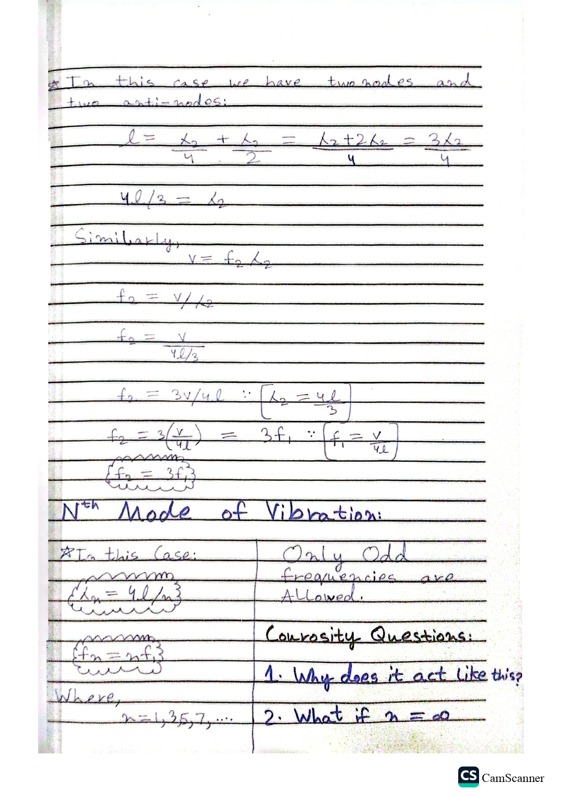

Closed Pipe Generalization
2nd Mode Continuation & N-th Mode Odd Harmonics
Continuation of 2nd Mode :
★ Board note: In this
case we have two nodes and two anti-nodes.
l = λ₂/4 + λ₂/2 = (λ₂ + 2λ₂)/4 = 3λ₂/4
4l / 3 = λ₂
Similarly,
v = f₂ λ₂
f₂ = v / λ₂
f₂ = v / (4l / 3)
f₂ = 3v / 4l ∵ [λ₂ = 4l / 3]
f₂ = 3(v / 4l) = 3f₁ ∵ [f₁ = v / 4l]
Nth Mode of Vibration :
★ In this Case:
{ λₙ = 4l / n }
{ fₙ = n·f₁ }
Where,
n = 1, 3, 5, 7, ...
Only Odd Frequencies are Allowed.
Courosity Questions:
- Why does it act like this?
- What if n = ∞?
Original Notebook Page

Add ch7_p14.jpg next to this file